Создаём дочерний поток с помощью pthread_create, затем проверяем на ошибку создания. Главный поток выводит строки parent N, а дочерний — child N. В конце объединяем потоки с помощью pthread_join.
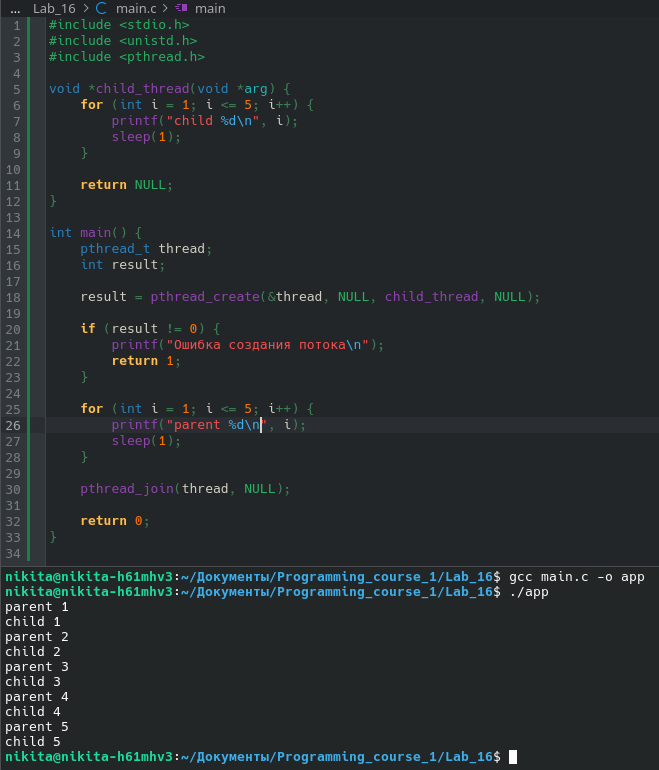
Переносим pthread_join до вывода главного потока.
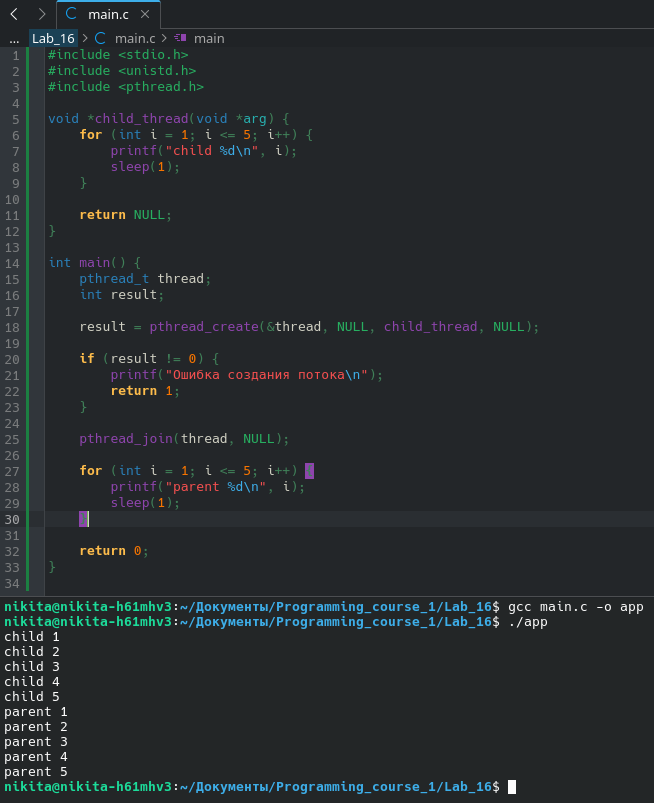
Создаём массив строк strings для удобства вывода. Создаём дочерние потоки в цикле, передавая каждому strings[i]. Объединение потоков также заносим под цикл.
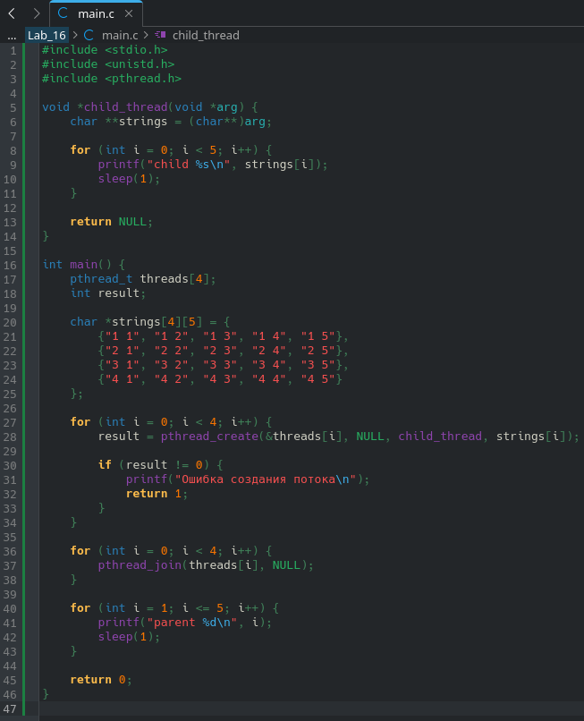
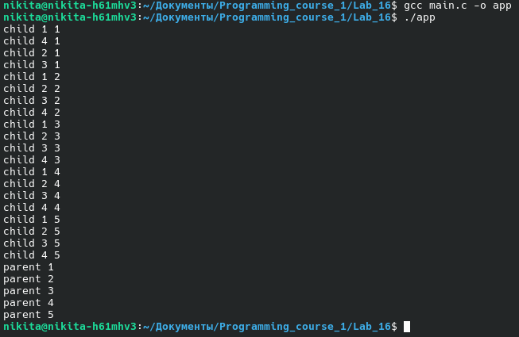
Досрочно завершаем все потоки через некоторое время с помощью pthread_cancel.
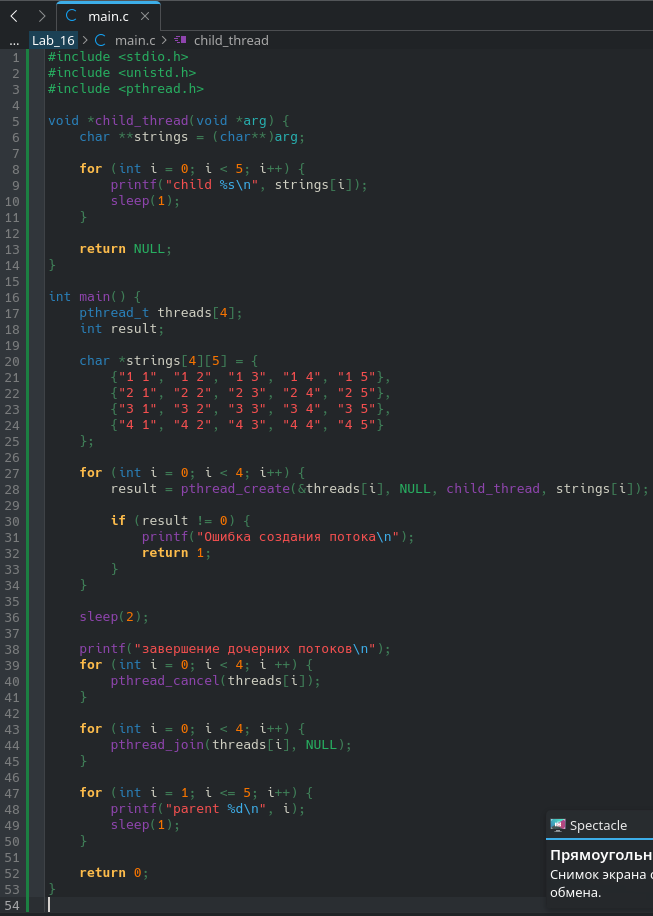
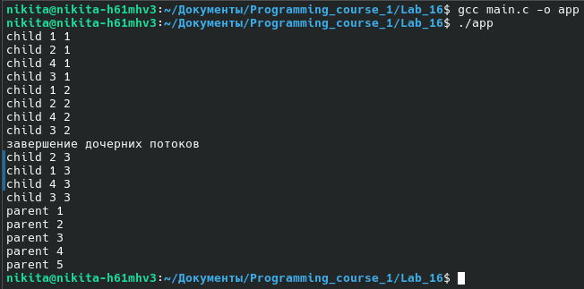
Перед завершением каждый поток печатает сообщение. Используем pthread_cleanup_push().
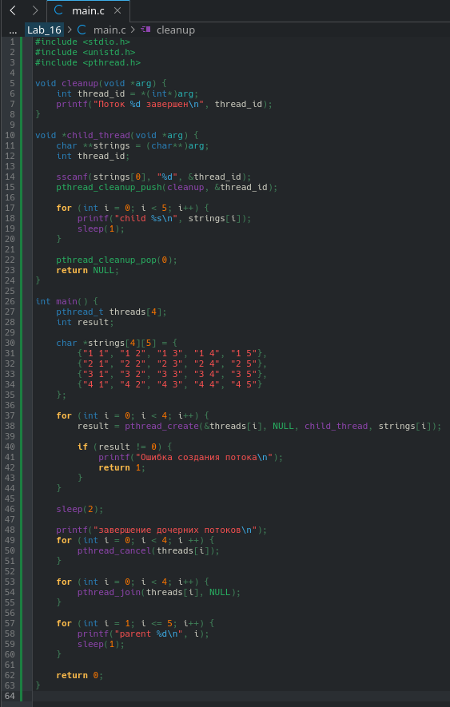
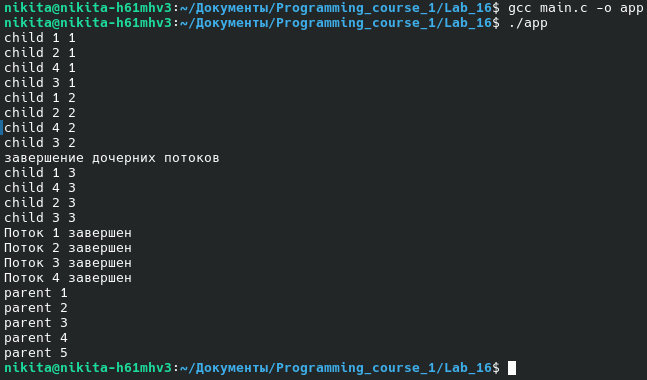
Реализуем шуточный алгоритм сортировки sleepsort.
Для каждого элемента массива создаётся поток, которому передаётся значение — время ожидания перед выводом. Вместо sleep используем usleep, но для точности считаем десятками миллисекунд (* 10000).
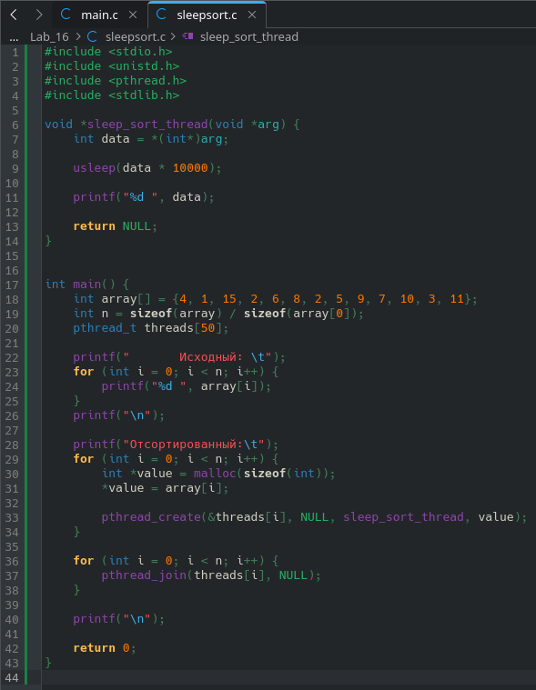
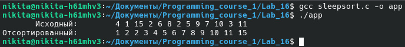
Синхронизируем родительский и дочерний потоки с помощью mutex и флага.
Флаг определяет, чья очередь выводить данные. Критическая секция (flag и printf) обрабатывается через pthread_mutex_lock и pthread_mutex_unlock. Без mutex возникла бы гонка потоков, и порядок вывода строк мог бы нарушиться.
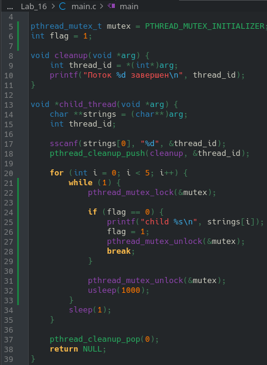
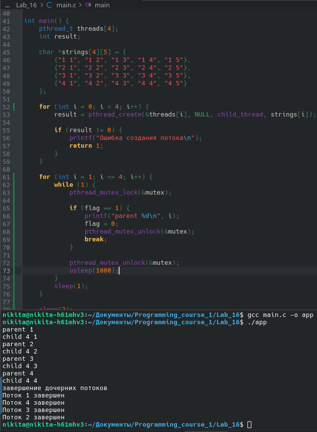
Реализуем перемножение квадратных матриц с использованием потоков.
Каждому потоку выделяется равная часть матрицы A. Поток перемножает её с B и записывает результат в C.
Сначала объявляем функции работы с матрицами:
multiply_matrix, create_matrix, free_matrix, print_matrix.
Создаём три матрицы и проверяем работу функций без потоков.
Затем переписываем multiply_matrix в функцию дочернего потока child_thread.
В main обрабатываем аргументы командной строки (размер матриц, количество потоков).
Делим матрицу A между потоками, запускаем потоки, ждём их выполнения и выводим результат.
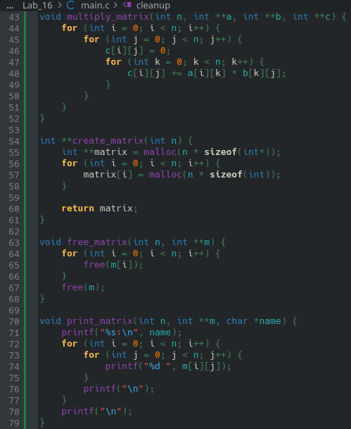
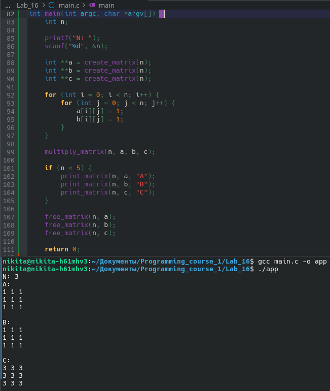
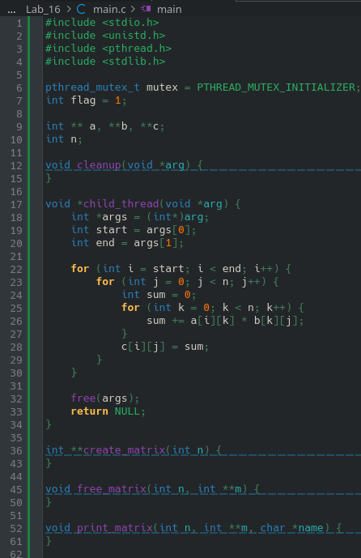
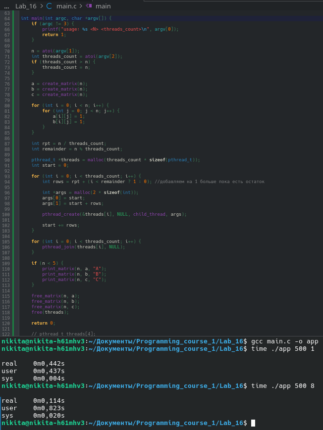
Замеряем время выполнения при:
Замеры выполнялись с помощью библиотеки <sys/time>.
Графики построены в gnuplot на основе выводов программы.
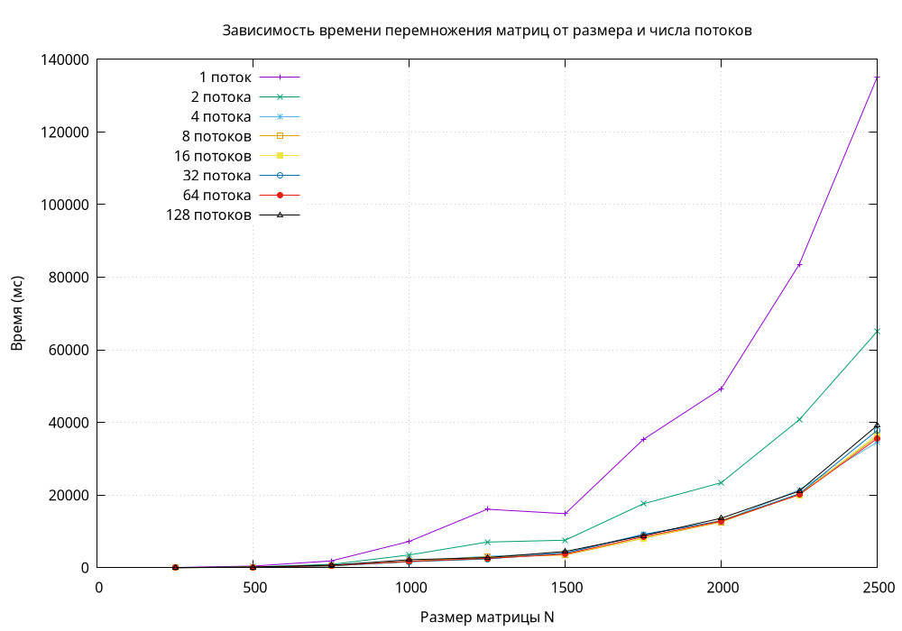
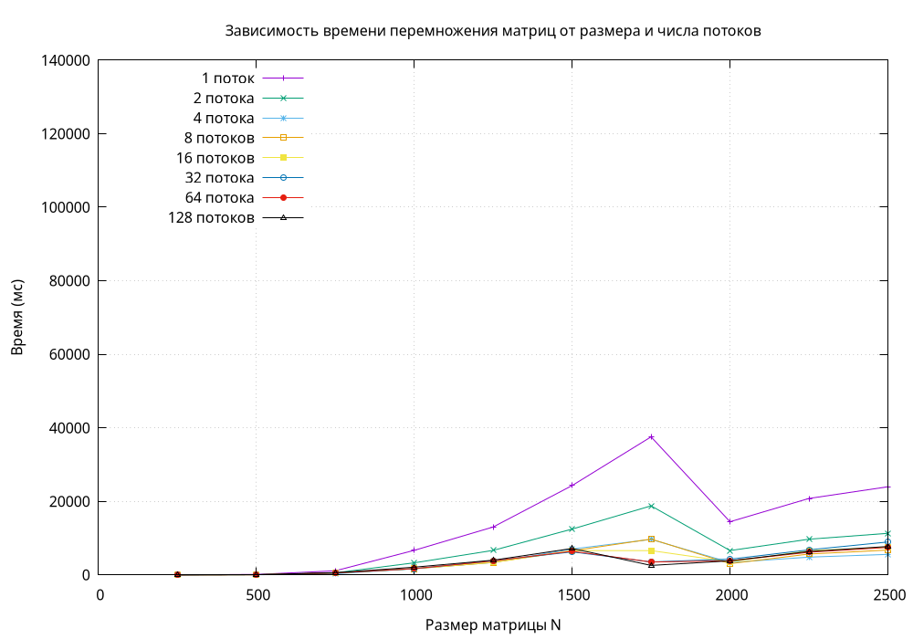
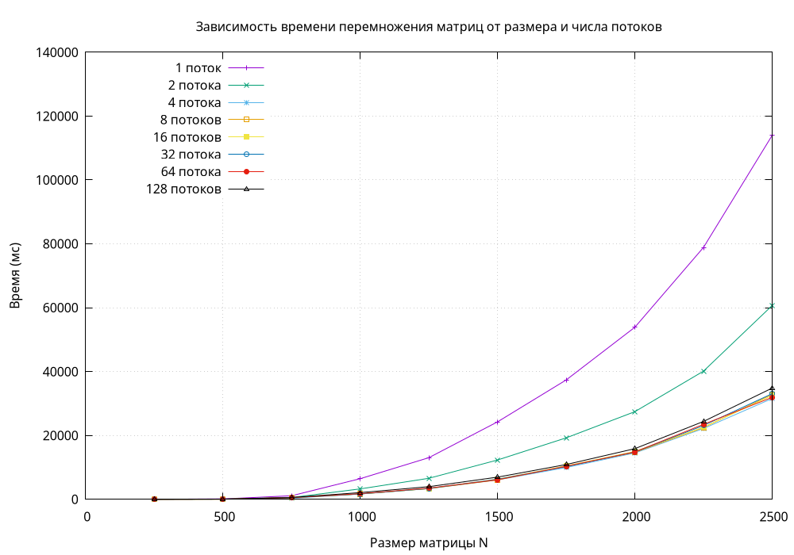
На графике O3 хорошо видно, что больше 8–16 потоков смысла запускать нет.
Это ограничено характеристиками процессора i7-3770 (4 физических ядра / 8 логических (hyper threading)).
Запуск 32 или 128 потоков не даёт прироста — потоки выполняются по очереди.
На графике O2 видно, что 128 потоков иногда работают быстрее. Это связано с размером кэша процессора (L3 8МБ): часть матрицы A и матрицы B и C помещаются в кэш, что ускоряет работу.